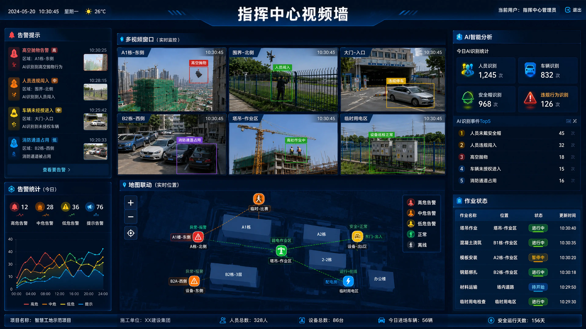
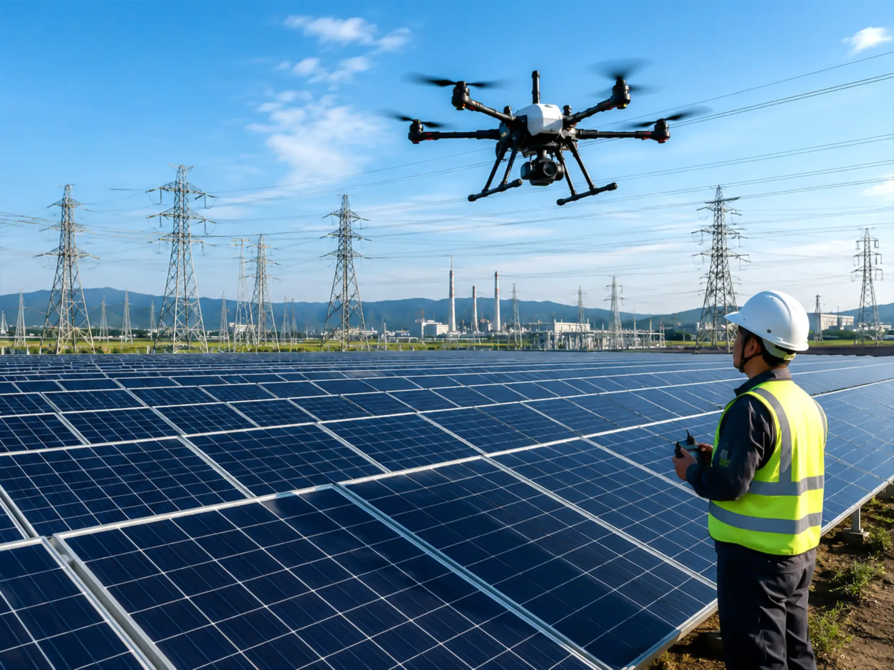
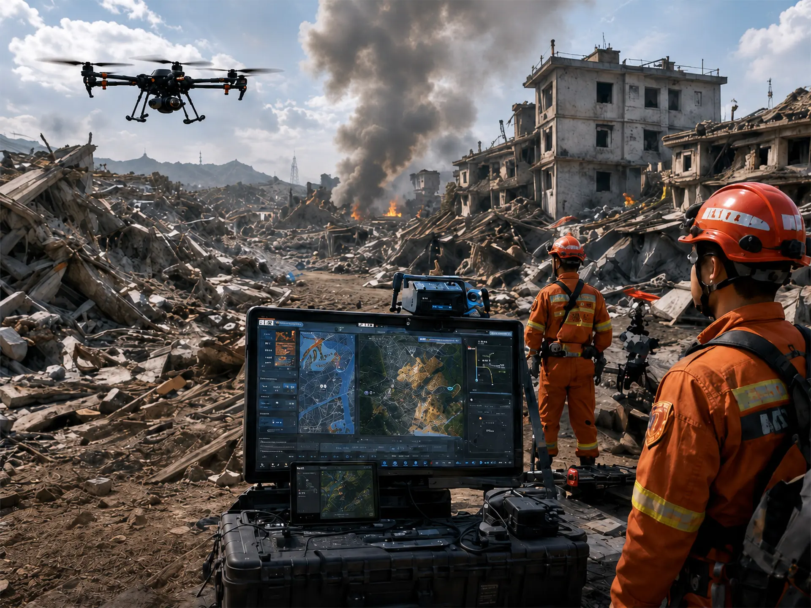
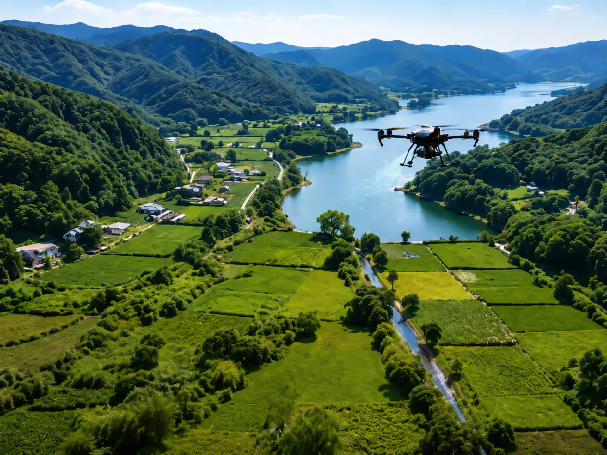
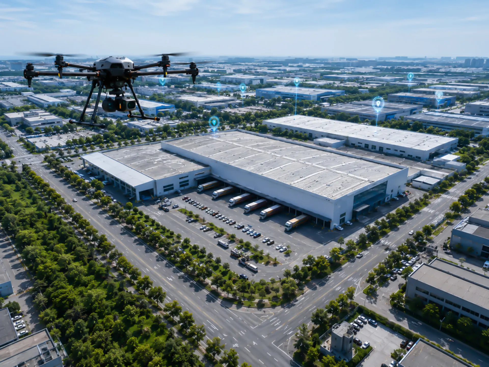

中文
English
日本語
基于GIS空间计算、实时图传、数字孪生与AI识别技术，实现低空作业任务的实时感知、远程协同与智能分析。
平台融合：
实现低空作业任务的全流程数字化闭环：
高精地图 · 三维场景建模 · 地形数据 · 空间测绘 · 多图层管理
真实环境映射 · 实时状态同步 · 城市场景还原 · 作业区域建模 · 动态环境模拟
距离测量 · 高度分析 · 路径分析 · 热力分析 · 风险区域分析
视频数据 · 飞行轨迹 · 传感器数据 · GIS坐标 · 实时环境数据

支持无人机、机载设备与地面终端之间的实时视频回传与远程协同。
1080P/4K
低延迟传输
多码流支持
弱网优化
多无人机接入
多视角监看
分屏调度
多终端同步
目标识别
异常检测
人车识别
风险预警
录像回放
时间轴检索
任务归档
数据标注





支持指挥中心、Web端、移动端、大屏系统及远程终端的数据联动。
跨平台瞬间同步作业指令与航线数据
打通指挥台与现场作业人员的沟通壁垒
多端同屏显示GIS空间位置与现场实况
欢迎咨询数字孪生、GIS平台、无人机图传与低空行业解决方案。